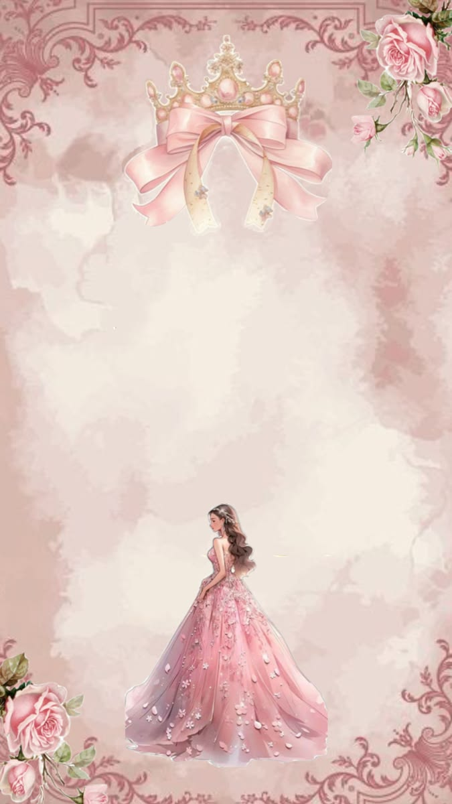
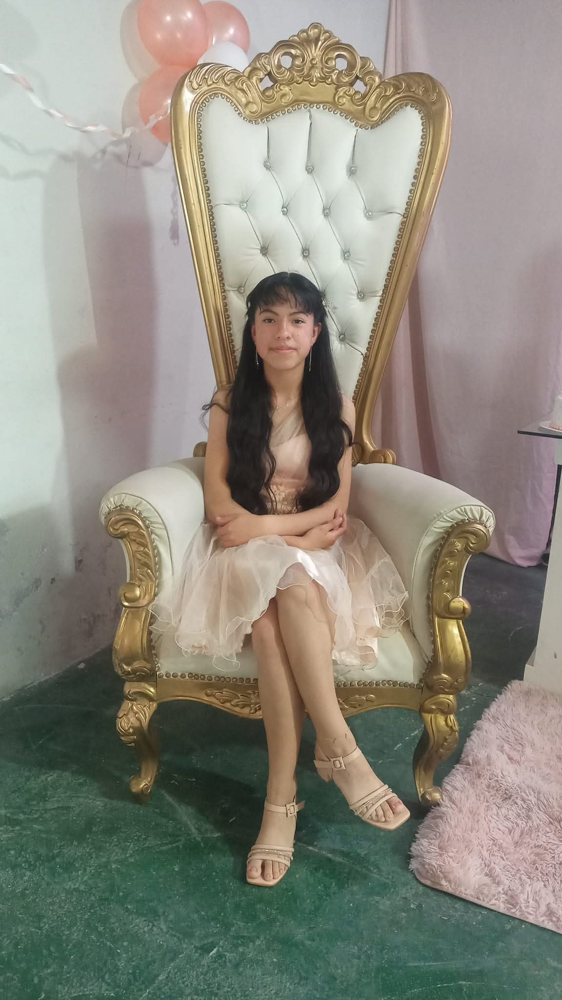
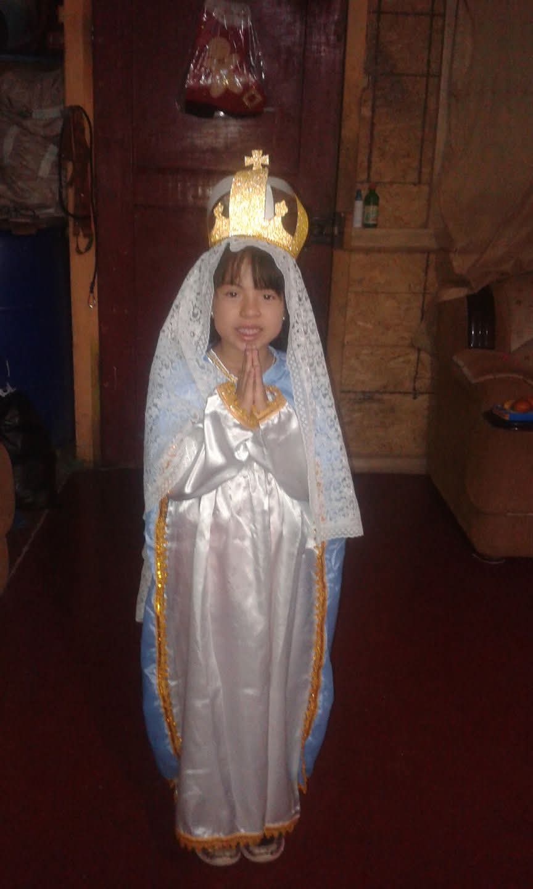
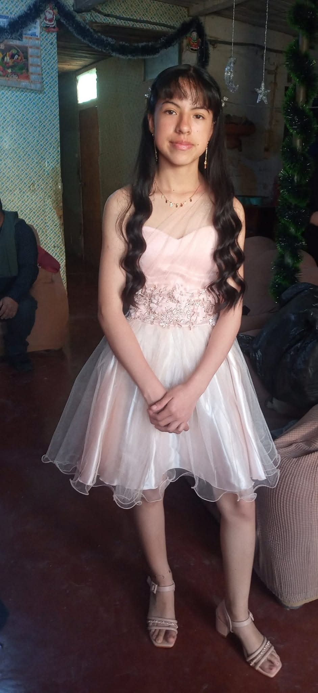

Mis Quince Años
Presiona el ♥ para escuchar mi canción

ALISON FLORES
Cuenta Regresiva
Con el amor de mis padres
Sheyla Pretel Mori
&
Juan Flores Pretel
Ubicación
Galería



Toca el sobre para abrir
Presiona el ♥ para escuchar mi canción

Sheyla Pretel Mori
&
Juan Flores Pretel


